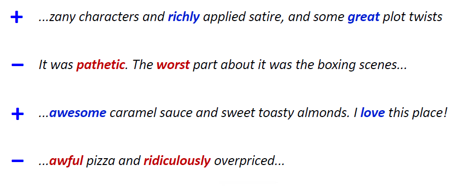
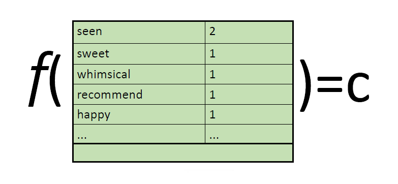
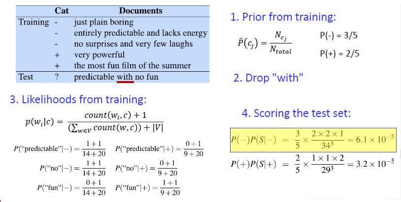
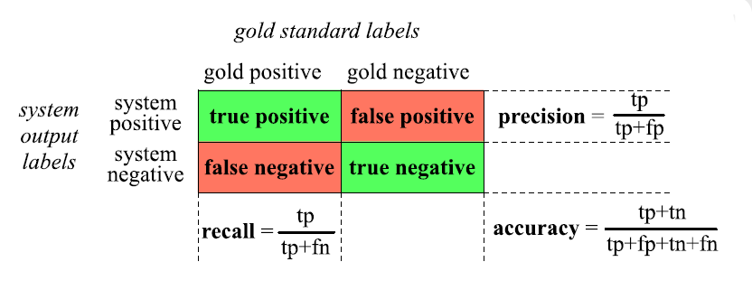
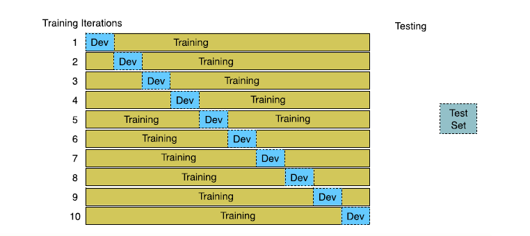

(三)Text Classification
Text Classification
基本任务
识别垃圾邮件(spam)
给杂志、论文贴上标签
划出句子中的正面、负面的词汇，从而把握整体的情感：

情绪分析(sentiment analysis)包括:
- Movie : is this review positive or negative?
- Products : what do people think about the new iPhone?
- Public sentiment : how is consumer confidence?
- Politics : what do people think about this candidate or issue?
- Prediction : predict market trends from sentiment
情绪分析是对attitude的检测，主要关注两个方面：
- positive or negative
- classification
基本模型
Input:
- a document \(d\)
- a fixed set of classes \(C = \{c_1, c_2, c_3...\}\)
Output :
- a predicted class \(c\in C\)
简单来说就是确定好几个类别，将新的一个文本分进一个类别。
解决办法
手动制定规则：
- 基于单词的组合或其他特征（垃圾邮件地下有网址或其中的重复关键句）
- 可以非常准确
- 但规则制定的过程成本昂贵
基于深度学习
Input:
文档：A document d
定义好的一些类：A fixed set of classes \(C=\{c_1,c_2,...,c_n\}\)
训练集：A training set of m hand-labeled documents \((d_1,c_1),...,(d_m,c_m)\)
Output:
- 分类器：A learned classifier \(f: d \rightarrow c\)
一些知名的分类器：
- Naïve Bayes
- Logistic regression
- Neural networks
- k-Nearest Neighbors
朴素贝叶斯分类器
朴素贝叶斯分类器是基于贝叶斯规则的。依赖于一个简单的文档表示方法——Bag of words：

Bag of words中包含每个单词的出现频率，我们可以通过它来计算、学习出一个分类器。

对于一个文档d和一个类c有： \[ P(c|d)=\frac{P(dc)}{P(d)}=\frac{P(d|c)P(c)}{P(d)} \]
\[ \begin{align} c_{map}&=argmax_{c\in C}P(c|d) \\\\ &=argmax_{c\in C}\frac{P(d|c)P(c)}{P(d)} \\\\ &=argmax_{c\in C}P(d|c)P(c) \\\\ &=argmax_{c\in C}P(x_1,x_2,...,x_n | c)P(c) \\\\ &c_{NB}=argmax_{c\in C}P(c)\prod_{x_i\in X}P(x_i|c) \\\\ &=argmax_{c\in C}\big[logP(c)+\sum_{i\in positions}logP(x_i|c)\big] \end{align} \]
上面的公式中：
- map指的是maximum a posteriori最大后验概率，即我们要找出一个最大可能的类；
- 由于所有类的算出的\(c_{map}\)的分母都是\(P(d)\)，所以可以省去
- \(P(c)\)是先验概率，即某一个类的出现概率
- 如何估算\(P(x_1,x_2,...,x_n | c)\)，我们可以假设单词的位置、顺序是无关紧要的，且假设\(P(x_i|c)\)之间相互独立，则我们可以得到最后一条式子。
- positions指的是所有单词再文本中的位置
- 考虑小数精度问题、计算的方便性，我们可以取log
Learning
在上面的式子中，主要求两个值：\(P(c)\)和\(P(x_i|c)\)
我们可以单纯的使用单词出现的频率来表示这两个值： \[ \hat P(c_j) = \frac{N_{c_j}}{N_{total}}\\ \hat P(w_i|c_j)=\frac{count(w_i,c_j)}{\sum_{w\in V}count(w,c_j)} \] 考虑有的单词没有出现在训练集中，可能出现P等于0的情况，所以需要进行拉普拉斯平滑： \[ \hat P(w_i|c_j)=\frac{count(w_i,c_j)+1}{\sum_{w\in V}count(w,c_j)+|V|} \]
Unknown words
对于在测试集中出现了我们训练集中没有遇到过的单词怎么办？
- 将他们从测试集文档中移除
- 假装他们不存在
- Don't include any probability for them at all
Stop words
一些系统会忽略掉stop words——非常频繁出现的词汇比如the、a
- 在训练集中对所有的单词进行频率的排序
- 将出现次数最多的前10~50个单词列入stopword list
- 在训练集和测试集中移除这些词语，假装他们从未出现过
但是移除停用词也未必起到很好的效果，在实践过程中常常使用所有单词而不会设置stopword list
实例sentiment example

基本过程总结：
- 计算每个类的出现频率
- 删除每个文档中的重复项（停用词）
- 使用拉普拉斯平滑计算\(\hat P(w_i|c_j)\)
- 计算\(c_{NB}\)或者说\(c_{MAP}\)
Optimizing for sentiment analysis
对于情绪分析，似乎单词的出现次数并不能告诉我们更多信息，比如说fantastic出现五次和出现一次没有太大区别。
所以我们可以将其优化成Binary multinominal Naive B ayes 或者 binary NB：
即将所有的单词计数记为1。
Naïve Bayes: Relationship toLanguage Modeling
朴素贝叶斯分类器可用于多种分类：URL、email address、字典等
我们只使用了单词的特征，且使用了文本中所有的单词。
这与之前文章中《N-gram语言模型》提到的language modeling中的unigram模型有很多相似之处。
Precision, Recall, and F measure
让我们考虑二进制文本分类任务。
假设你是戴尔的首席执行官，你想知道人们对你的笔记本电脑的看法，所以你建立了一个“戴尔笔记本电脑”推特检测器：
- 正面类：关于戴尔笔记本电脑的推文
- 负面类：所有其他推文

我们为什么不把accuracy作为衡量标准呢？
想象一下，我们看到了100万条推特，其中100人谈论戴尔笔记本电脑，999900谈了些别的事 我们可以建立一个愚蠢的分类器，只标记每个不关于戴尔笔记本电脑的tweet。
它将获得99.99%的准确率！！！但是这并不是我们需要寻找的东西。这就是为什么需要引入precision和recall了。我们使用以下公式来计算 \[ F_{ \beta } = \frac {( {\beta } ^ 2+1)PR}{\beta ^2P+R} \]
大部分情况下使用balanced \(F_1取\beta=1\)
\[ F_{\beta} = \frac{2PR}{P+R} \]
交叉测试
在训练集上训练，在development集上调整，在测试集上进行验证、报告：
- 相比于在训练集上调整这样可以防止过拟合
- 但是想要尽可能多的数据进行测试，又有尽可能多的数据作为development该怎么做呢？
